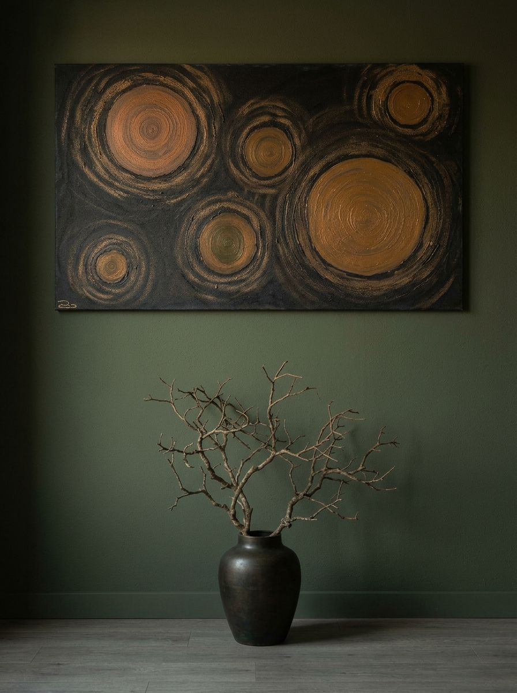
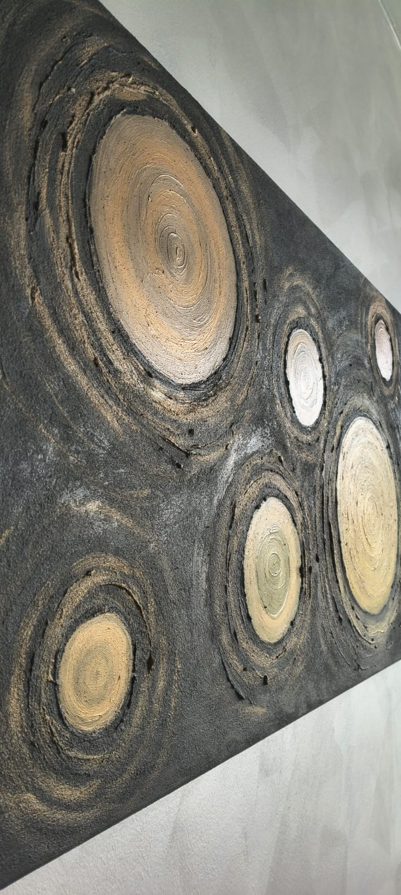
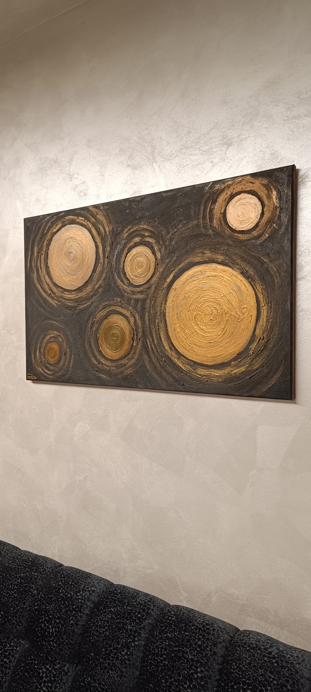
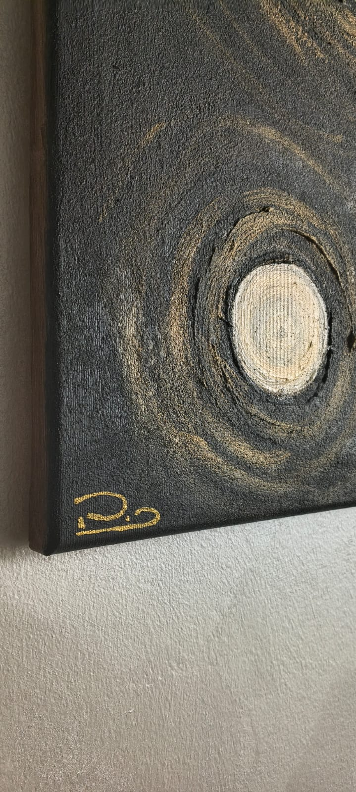

MANIFESTO DELL'ARTE DISTANTE
Pio Cecchini — Aesthetics Explorer





Dimensioni: 100 x 60 cm |
Tecnica: Acrilico e sabbia su tela (Pittura materica concettuale) |
Anno: 2026 |
Stato: Disponibile
NOTA CONCETTUALE DELL'ARTISTA:
Il cosmo ha le sue leggi, che la scienza spiega solo in parte. Nei pressi di un buco nero, le forze di marea causate dalle differenze di gravità tendono ad allungare e lacerare i corpi; il tempo rallenta, le traiettorie delle linee visuali vengono deviate e la luce viene inghiottita. Queste entità misteriose e affascinanti, create dall’implosione di vecchie stelle, attirano tutto oltre l’orizzonte degli eventi, luogo dove regna l’ignoto.
Auspico che anche i buchi neri del nostro inconscio possano inghiottire tutto ciò che non riusciamo a lasciare andare, facendolo svanire oltre l’orizzonte degli eventi del lato oscuro della nostra mente, un luogo che tutti possediamo, sappiamo di possedere ma che evitiamo accuratamente di frequentare.
Auspico che anche i buchi neri del nostro inconscio possano inghiottire tutto ciò che non riusciamo a lasciare andare, facendolo svanire oltre l’orizzonte degli eventi del lato oscuro della nostra mente, un luogo che tutti possediamo, sappiamo di possedere ma che evitiamo accuratamente di frequentare.